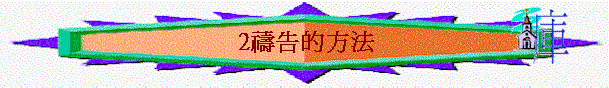

一.禱告的方法
1.舉手
「摩西對他說：「我一出城，就要向耶和華舉手禱告；雷必止住，也不再有冰雹，叫你知道全地都是屬耶和華的。」出9:29
「我願男人無忿怒，無爭論（或作：疑惑），舉起聖潔的手，隨處禱告。」提前2:8
2.哭泣
「哈拿心裡愁苦，就痛痛哭泣，祈禱耶和華，」撒上1:10
「基督在肉體的時候，既大聲哀哭，流淚禱告，懇求那能救他免死的主，就因他的虔誠蒙了應允。」來5:7
3.站著
「那稅吏遠遠的站著，連舉目望天也不敢，只捶著胸說：『神啊，開恩可憐我這個罪人！』」路18:13
4.默禱
「（原來哈拿心中默禱，只動嘴唇，不出聲音，因此以利以為他喝醉了。）」撒上1:13
5.跪禱
「所羅門在耶和華的壇前屈膝跪著，向天舉手，在耶和華面前禱告祈求已畢，就起來，站著，大聲為以色列全會眾祝福，說：」王上8:54-55
6.俯伏
「以斯拉禱告，認罪，哭泣，俯伏在神殿前的時候，有以色列中的男女孩童聚集到以斯拉那裡，成了大會，眾民無不痛哭。」拉10:1
「他就稍往前走，俯伏在地，禱告說：「我父啊，倘若可行，求你叫這杯離開我。然而，不要照我的意思，只要照你的意思。」」太26:39
7.禁食
「我聽見這話，就坐下哭泣，悲哀幾日，在天上的神面前禁食祈禱，說：」尼1:4
「至於這一類的鬼，若不禱告、禁食，他就不出來（或作：不能趕他出來）。」」太17:21
8.歌頌
「白晝，耶和華必向我施慈愛；黑夜，我要歌頌禱告賜我生命的神。」詩42:8
二.禱告的地點
1.內屋/家中
「你禱告的時候，要進你的內屋，關上門，禱告你在暗中的父；你父在暗中察看，必然報答你。」太6:6
「哥尼流說：「前四天，這個時候，我在家中守著申初的禱告，忽然有一個人穿著光明的衣裳，站在我面前，」徒10:30
2.曠野
「耶穌卻退到曠野去禱告。」路5:16
3.聖殿
「你的民以色列若得罪你、敗在仇敵面前、又歸向你、承認你的名、在這殿裡祈求禱告。」王上8:33
「便教訓他們說：「經上不是記著說：我的殿必稱為萬國禱告的殿嗎？你們倒使他成為賊窩了。」」可11:17
4.魚腹
「約拿在魚腹中禱告耶和華他的神，」拿:1
5.園子
「耶穌同門徒來到一個地方，名叫客西馬尼，就對他們說：「你們坐在這裡，等我到那邊去禱告。」」太26:36
6.山上
「他既辭別了他們，就往山上去禱告。」可6:46
7.禱告的地方
「當安息日，我們出城門，到了河邊，知道那裡有一個禱告的地方，我們就坐下對那聚會的婦女講道。」徒16:13
8.囚室
「約在半夜，保羅和西拉禱告，唱詩讚美神，眾囚犯也側耳而聽。」徒16:25
～其實無論在任何一地方，我們也可以禱告，但為使我們專心，聖經常提到主刻意找一個較寧靜及沒人騷擾的地方禱告
三.禱告的態度
1.誠心
「我們當誠心向天上的神舉手禱告。」哀3:41
2.信心
「你們禱告，無論求什麼，只要信，就必得著。」」太21:22
3.恆切
「耶穌設一個比喻，是要人常常禱告，不可灰心。」路18:1
「在指望中要喜樂，在患難中要忍耐，禱告要恆切。」羅12:12
4.用靈及悟性
「這卻怎麼樣呢？我要用靈禱告，也要用悟性禱告；我要用靈歌唱，也要用悟性歌唱。」林前14:15
5.不故意讓人看見
「你們禱告的時候，不可像那假冒為善的人，愛站在會堂裡和十字路口上禱告，故意叫人看見。我實在告訴你們，他們已經得了他們的賞賜。你禱告的時候，要進你的內屋，關上門，禱告你在暗中的父；你父在暗中察看，必然報答你。」太6:5-6
6.為逼迫你的祈禱
「只是我告訴你們，要愛你們的仇敵，為那逼迫你們的禱告。」太5:44
7.多方禱告
「靠著聖靈，隨時多方禱告祈求；並要在此警醒不倦，為眾聖徒祈求，」弗6:18